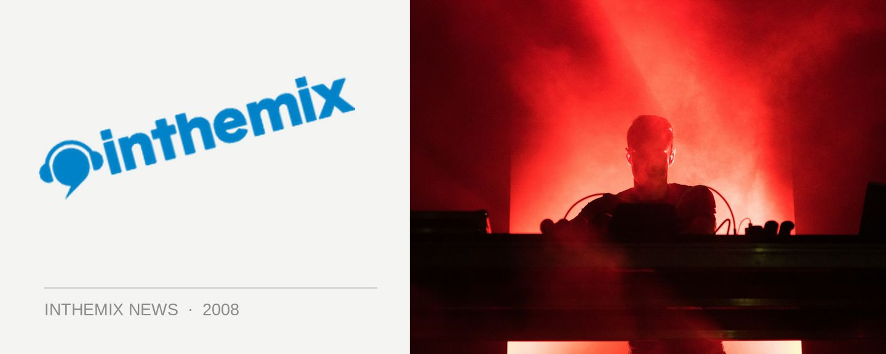

Federal Police close off Australia’s biggest ever ecstasy bust
Over four tonnes of MDMA, 150 kilos of cocaine, more than 400 Federal Police working on the case, and 45 search warrants issued that lead to 16 arrests across four states. It all adds up to what’s allegedly the single largest ecstasy bust the world has ever seen, and it all took place right on our doorstep.
It’s a figure that begs belief, but the Australian Federal Police claim the international drug syndicate was responsible for as much as 60 per cent of the drug imports to South East Australia. What’s even more startling is that the initial bust took place over a year ago in June, 2007, with police keeping a lid on it until raids were carried out across the country this morning.
MDMA tablets were discovered packed into more than 3,000 food tins, and it’s been estimated they carry a street price in excess of $440 million. While it’s a commonly held belief that the street value assigned to high-profile drug busts is often wildly inflated by authorities, any way you look at it that’s a lot of cash.
Federal Police Commissioner Mick Keelty told The Age that the operation was done in cooperation with European authorities. “The fact that a syndicate can sit back after importing 4.4 tonnes of narcotics (and) can continue to operate is something that seizes the minds of investigators and has focused our work over the 12 months or so,” he said.
Information on the bust was kept under tight wraps last year in the hope of catching members of the syndicate, but no one showed up to claim up the massive ecstasy haul. “If you think it through, there aren’t too many boardrooms in Australia where you write off half-a-billion dollars worth of a commodity, of product and continue your business,” said Keelty.